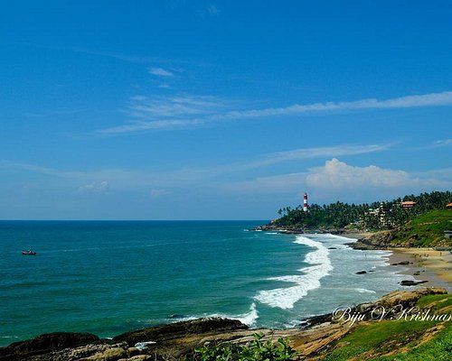

TRIVANDRUM

SREE PADMANABHASWAMY TEMPLE
The 8th century Sree Padmanabhaswamy Temple is one of the 108 temples in India dedicated to Lord Vishnu. In this temple, you will find Lord Vishnu reclining on the hooded serpent Anantha.
It was during the time of King Marthanda Varma that this temple saw a major renovation. What we see today is the result of the meticulous renovation work on the ancient temple. The devout King Marthanda Varma took it upon himself and
the royal family to look after the temple and the people of the state/kingdom. This was followed by the tradition of Thripadidanam, the donation to the temple and its deity. The last Maharaja of Travancore Maharaja Sree Padmanabha Dasa
Sree Chithira Thirunal Bala Rama Varma, in 1965, formed the Sree Padmanabha Swamy Temple Trust to continue religious offerings and donations.

KOVALAM BEACH
Kovalam is an internationally renowned beach with three adjacent crescent beaches. It has been a favourite haunt of tourists since the 1930s. A massive rocky promontory on the beach has created a beautiful bay of calm waters ideal for sea bathing.
The leisure options at this beach are plenty and diverse. Sunbathing, swimming, herbal body toning massages, special cultural programmes and catamaran cruising are some of them. The tropical sun acts so fast that one can see the faint blush of coppery tan on the skin in a matter of minutes. Life on the beach begins late in the day and carries on well into the night. The beach complex includes a string of budget cottages, Ayurvedic health resorts, convention facilities, shopping zones, swimming pools, Yoga and Ayurvedic massage centres.
Accommodation facilities for tourists at Kovalam range from five star hotels to budget hotels and the choice of food available at restaurants and cafeterias range from Continental varieties to South Indian delicacies.
Thiruvananthapuram, the capital city of Kerala, is just 16 km away from Kovalam and getting there is no hassle. But if you are on holiday it is better to stay in Kovalam and visit the city.
Aazhimala Shiva Temple
The Azhimala Shiva Temple is renowned for its mesmerizing sculpture of Lord Shiva, which stands on a rock at an altitude of 20 ft. from the sea. The statue, which took almost six years to complete, depicts Lord Shiva in his chaturbhuj avatar holding a Trishul and a damru, with another left hand releasing Devi Ganga from his hair strands while the right hand rests on his thighs. The third eye on his forehead symbolizes Lord Shiva's ability to see all three periods - past, present, and future. The statue is also adorned with tiger skin, rudraksha beads, and a serpent over his neck, with a crescent moon placed on his crown, representing his incarnation as Chandrashekhara. The sculpture is a testament to the skill and dedication of its creator, P.S Devadathan, and is admired by thousands of devotees who visit the temple every year.